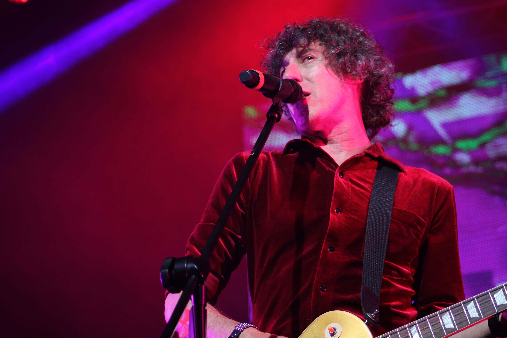
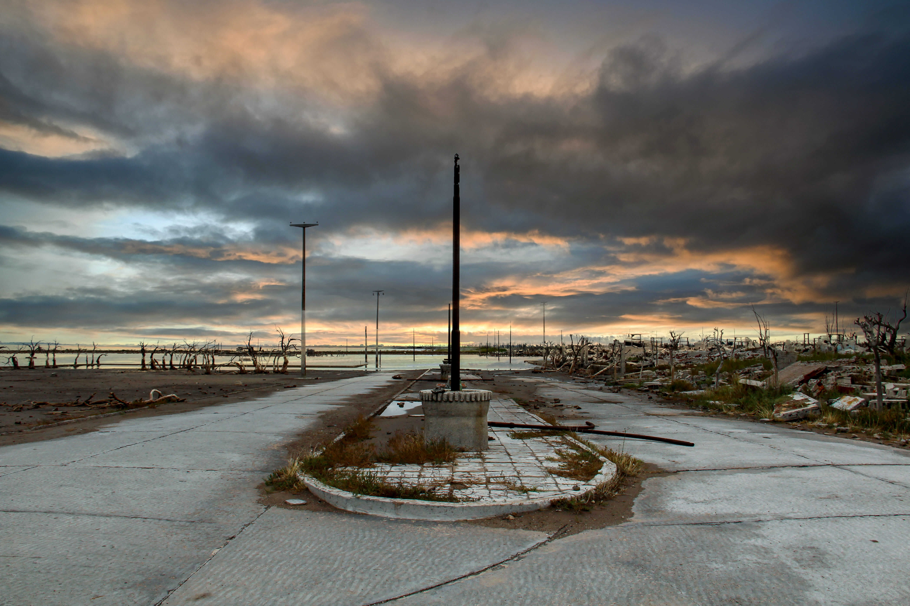
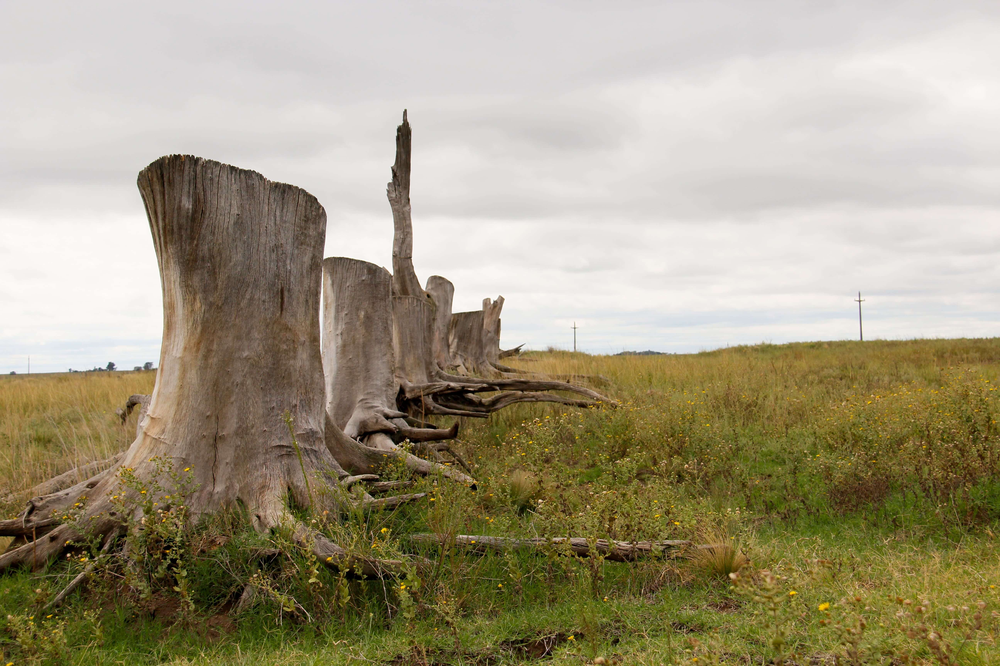
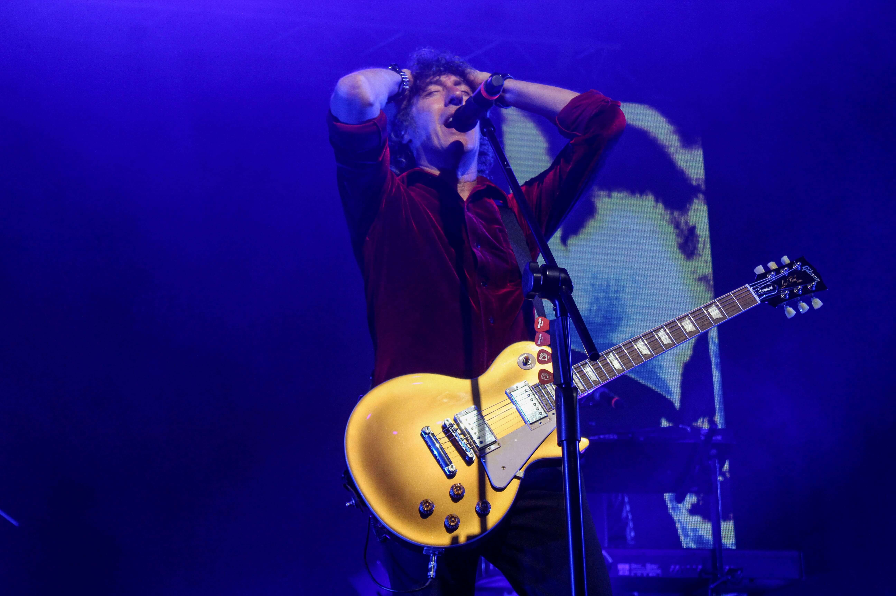

Casamiento en Luján de Cuyo, comunidad koreana, mazro de
2021

Atardecer en Potrerillos Mendoza, noviembre de 2022
 Concierto de La Renga en San Luis, Febrero del 2022
Concierto de La Renga en San Luis, Febrero del 2022

Concierto de La Renga en San Luis, Febrero del 2022

Concierto de La Renga en San Luis, Febrero del 2022
 Concierto de La Renga en San Luis, Febrero del 2022
Concierto de La Renga en San Luis, Febrero del 2022
Soy Celina Serio, fotógrafa profesional y comunicadora social.
Trabajo hace 8 años en un medio independiente llamado Te veo tan loca y en la actualidad en una productora audiovisual llamada Vakita Producciones.
Realizo fotografía profesional de eventos varios (casamientos, cumpleaños, bautismos, etc), sesiones fotográficas para emprendedores, sesiones de todo tipo, obras de teatro y recitales. Además podés consultar por un plan comunicacional que incluya producción audiovisual, animación y creación de contenidos para tus redes sociales.